전자산업기사 (2012-05-20 기출문제)
1과목: 전자회로
1. 발진회로에 대한 설명으로 옳은 것은?
- 수정편의 두께는 발진주파수와 무관하다.
- 수정 발진회로는 수정편의 압전효과를 이용한다.
- 콜피츠 발진회로는 RC 발진회로의 한 종류이다.
- 블로킹 발진회로는 정현파 발진회로의 한 종류이다.
(정답률: 84%)

2. 증폭기에서 ICO=0.1[mA], IB=0.5[mA]일 때 IC는 몇 [mA]인가? (단, α=0.9이다.)
- 3.5[mA]
- 4.6[mA]
- 5.5[mA]
- 7.5[mA]
(정답률: 65%)
3. 상온의 진성반도체에 전압을 인가했을 때 나타나는 현상으로 가장 적합한 것은?
- 전자와 정공은 모두 양(+) 전극으로 이동한다.
- 전자와 정공은 모두 음(-) 전극으로 이동한다.
- 전자는 양(+) 전극으로 이동하고, 정공은 음(-) 전극으로 이동한다.
- 정공은 양(+) 전극으로 이동하고, 전자는 음(-) 전극으로 이동한다.
(정답률: 84%)
4. 정현파 입력에 의하여 구형파의 출력 파형을 얻는 회로는?
- 적분회로
- 부우스트랩회로
- 밀러 적분회로
- 시미트 트리거회로
(정답률: 89%)
5. FM 변조에서 변조지수가 4, 신호주파수가 5[kHz]일 때, 최대주파수 편이는?
- 10[kHz]
- 20[kHz]
- 30[kHz]
- 40[kHz]
(정답률: 86%)
6. 입력신호 반주기 동안 동작하며, 동작점은 차단영역에서 동작하는 전력 증폭기는?
- A급 전력 증폭기
- B급 전력 증폭기
- C급 전력 증폭기
- AB급 전력 증폭기
(정답률: 76%)
7. FET 증폭기에 있어서 GㆍB 적을 크게 하려면?
- μ를 적게 한다.
- gm을 크게 한다.
- 정전용량을 크게 한다.
- 부하저항을 작게 한다.
(정답률: 76%)
8. 이상적인 연산증폭기의 두 입력 전압이 V1=V2일때 출력 전압으로 가장 적합한 것은?
- 0
- V1
- 2V1
- 무한대
(정답률: 75%)
9. 직렬 전압궤환증폭기의 특징에 대한 설명으로 틀린 것은?
- 전압 이득이 감소한다.
- 주파수 대역폭이 증가한다.
- 비직선 일그러짐이 감소한다.
- 출력 임피던스가 증가한다.
(정답률: 80%)
10. 다음 그림의 변조도는 약 몇 [%]인가? (단, A=10[v], B=5[V], C=2.5[V]이다.)
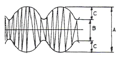
- 10
- 33
- 66
- 80
(정답률: 77%)
11. 다음 연산 회로의 출력 값으로 옳은 것은?
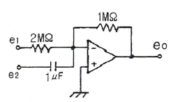
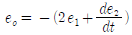
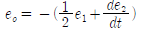
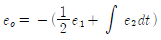
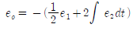
(정답률: 72%)
12. 차동증폭기에서 공통성분 제거비(CMRR)에 대한 설명으로 옳은 것은?
- 동상이득이 클수록 CMRR이 커진다.
- 차동이득이 클수록 CMRR이 작아진다.
- CMRR은
 으로 정의된다.
으로 정의된다. - CMRR이 클수록 차동증폭기의 성능이 좋다.
(정답률: 80%)
13. 다음 중 트랜지스터 회로의 바이어스를 거는 방법으로 가장 적합한 것은?
- 베이스-이미터 사이는 역방향, 컬렉터-베이스 사이도 역방향
- 베이스 이미터 사이는 역방향, 컬렉터-베이스 사이는 순방향
- 베이스 이미터 사이는 순방향, 컬렉터-베이스 사이도 순방향
- 베이스 이미터 사이는 순방향, 컬렉터-베이스 사이는 역방향
(정답률: 71%)
14. 수정발진기의 주파수변동 주요인으로 적합하지 않은 것은?
- 부하의 변동
- 전원전압의 변동
- 주위 온도의 변화
- 트랜지스터의 경년 변화
(정답률: 78%)
15. 다이오드를 사용한 정류회로에서 여러 다이오드를 병렬로 연결하여 사용하는 이유로 가장 타당한 것은?
- 효율을 높일 수 있다.
- 다이오드를 과전압으로부터 보호할 수 있다.
- 부하 출력의 맥동률을 감소시킬 수 있다.
- 다이오드를 과전류로부터 보호할 수 있다.
(정답률: 80%)
16. 다음 연산증폭기 회로에서 RL에 흐르는 전류가 5[mA]일 때 RL 값은?
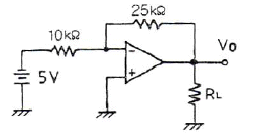
- 2.5[kΩ]
- 4[kΩ]
- 5[kΩ]
- 7.2[kΩ]
(정답률: 80%)
17. 다음 회로에서 V1=18[V], VZ=10[V], RS=10[Ω], RL=100[Ω]일 때 제너 다이오드에 흐르는 전류는 몇 [A]인가?
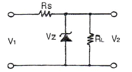
- 0.1[A]
- 0.3[A]
- 0.5[A]
- 0.7[A]
(정답률: 64%)
18. 베이스 접지의 트랜지스터 증폭회로에서 입력신호 전압과 출력신호 전압 간의 위상관계를 옳게 나타낸 것은?
- 위상차가 없다.
- 90°의 위상차가 있다.
- 180°의 위상차가 있다.
- 270°의 위상차가 있다.
(정답률: 55%)
19. 발진회로의 특성에 대한 설명으로 적합하지 않은 것은?
- 정궤환을 이용한다.
- 입력 신호가 필요없다.
- 궤환 루프의 이득이 0이다.
- 바크하우젠의 발진 조건은 |βA=1|이다.
(정답률: 63%)
20. 변조도가 50[%]인 진폭 변조 송신기에서 반송파의 평균 전력이 400[mW]일 때 변조된 출력의 평균 전력은?
- 450[mW]
- 500[mW]
- 530[mW]
- 650[mW]
(정답률: 66%)
2과목: 전기자기학 및 회로이론
21. 도체의 전도도를 k[℧/m], 투자율을 μ[H/m], 전원주파수를 f[Hz]라 할 때 표면 전류밀도의 0.368배가 되는 표피에서부터의 깊이 δ[m]는?
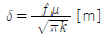
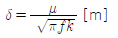
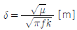
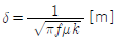
(정답률: 66%)
22. 한 변의 길이가 a[m]인 정육각형 A, B, C, D, E, F의 각 정점에 각각 Q[C]의 전하를 놓을 때 정육각형의 중심 0에 있어서의 전계는 몇 [V/m]인가?
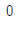
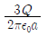
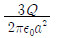
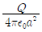
(정답률: 61%)
23. 그림과 같이 권수 1이고 반지름 a[m]인 원형전류 I[A]가 만드는 자계의 세기는 몇 [AT/m]인가?
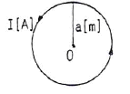
- I/a
- I/2a
- I/3a
- I/4a
(정답률: 76%)
24. 비유전율 εS=3인 유전체 중에 Q1=Q2=2×10-6[C]의 두 점전하간에 작용하는 힘 F가 3×10-3 [N]이 되도록 하려면 두 점전하는 몇 [m] 떨어져 있어야 하는가?
- 1
- 2
- 3
- 4
(정답률: 57%)
25. 종류가 다른 두 유전체 경계면에 전하 분포가 없을 때 경계면에서 정전계가 만족하는 것은?
- 전계의 법선성분이 같다.
- 전속밀도의 접선성분이 같다.
- 전속선의 유전율이 큰 곳으로 모인다.
- 경계면상의 두 점간의 전위차가 다르다.
(정답률: 56%)
26. 전기 쌍극자에 의한 전계의 세기는 쌍극자로부터의 거리 r[m]와 어떤 관계에 있는가?
- r에 반비례한다.
- r2에 반비례한다.
- r3에 반비례한다.
- r4에 반비례한다.
(정답률: 59%)
27. 대전된 구도체를 반지름이 2배되는 무대전구(無帶電球) 도체에 가는 도선으로 연결할 때 에너지의 손실비는 얼마나 되겠는가? (단, 두 도체는 충분히 떨어져 있는 것으로 본다.)
- 3/2
- 9/5
- 2/3
- 5/9
(정답률: 65%)
28. 전속밀도의 시간적 변화율을 무엇이라 하는가?
- 전계의 세기
- 변위전류밀도
- 에너지밀도
- 유전율
(정답률: 61%)
29. 철심에 도선을 250회 감고 1.2[A]의 전류를 흘렸더니 1.5×10-3 [Wb]의 자속이 생겼다. 자기저항[AT/Wb]은?
- 2×105[AT/Wb]
- 3×105[AT/Wb]
- 4×105[AT/Wb]
- 5×105[AT/Wb]
(정답률: 66%)
30. 진공 중에 있어서 2×10-4 [Wb]의 N극에서 1[m] 떨어진 점의 자계의 세기는 몇 [AT/m]인가?
- 6.33
- 12.66
- 63.3
- 126.6
(정답률: 71%)
31. 함수 f(t)=A를 Laplace 변환하면?
- A
- As
- A/s
- 1
(정답률: 81%)
32. 4단자 회로망의 4단자 정수 중 출력 개방시 역방향 전압 이득을 나타내는 것은?
- A
- B
- C
- D
(정답률: 60%)
33. 단위 길이당 임피던스 및 어드미턴스가 각각 Z 및 Y인 전파 정수 γ를 표시한 것은?
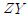
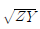
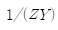
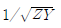
(정답률: 79%)
34. 그림과 같은 전류 파형의 주파수 f의 값은 몇 [Hz]인가?
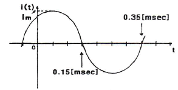
- 2.5[Hz]
- 25[Hz]
- 250[Hz]
- 2500[Hz]
(정답률: 56%)
35. R-C 직렬 회로망에서 시정수를 가장 크게 할 수 있는 것은?
- R은 작게 C는 크게 한다.
- R은 크게 C는 작게 한다.
- R과 C를 작게 한다.
- R과 C를 크게 한다.
(정답률: 74%)
36. “몇 개의 전압원과 전류원이 동시에 존재하는 회로망에 있어서 회로 전류는 각 전압원이나 전류원이 각각 단독으로 가해졌을 때 흐르는 전류를 합한 것과 같다”라고 정의한 정리는?
- 상반정리(가역정리)
- 테브난의 정리
- 중첩의 정리
- 밀만의 정리
(정답률: 84%)
37. 10[Ω] 저항과 10.6[mH] 인덕터가 60[Hz] 정현파 교류 전원에 직렬로 연결되어 있다. 이 회로의 임피던스는?
- j4[Ω]
- 10+j4[Ω]
- j10[Ω]
- 4+j10[Ω]
(정답률: 65%)
38. 10+j10[V]인 전압을 어떤 회로에 인가했더니 4+j1[A]인 전류가 흘렀다. 이 회로에서 소비되는 전력은 몇 [W]인가?
- 20[W]
- 30[W]
- 40[W]
- 50[W]
(정답률: 50%)
39. 5[MHz]의 공진주파수를 갖는 공진회로에서 Q가 200일 때 대역폭은?
- 25[kHz]
- 1[MHz]
- 2[MHz]
- 5[MHz]
(정답률: 61%)
40. 대칭 4단자 회로망에서 영상 임피던스 Z01은?
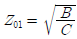
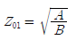
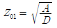
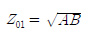
(정답률: 54%)
3과목: 전자계산기일반
41. 다음 [그림]은 반가산기의 기호이다. 입력 A=1, B=1인 경우 출력 S, C 값은?
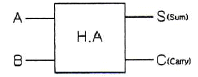
- S=0, C=0
- S=0, C=1
- S=1, C=0
- S=1, C=1
(정답률: 73%)
42. Excess-3 코드를 이용하여 5와 3을 더하면?(오류 신고가 접수된 문제입니다. 반드시 정답과 해설을 확인하시기 바랍니다.)
- 1110
- 0111
- 1001
- 1011
(정답률: 69%)
43. 오퍼랜드(operand) 필드의 내용이 연산에 사용할 실제 데이터가 명령어에 포함되어 있는 주소 모드(addressing mode)는?
- 암시 모드(implied mode)
- 즉치 모드(immediate mode)
- 레지스터 모드(register mode)
- 레지스터 간접 모드(register indirect mode)
(정답률: 76%)
44. 16비트로 된 레지스터가 있다. 첫째 비트가 부호비트라 할 때 1의 보수로 나타낼 경우 이 레지스터가 나타낼 수 있는 수의 범위는?
- 0 ~ 32768
- 0 ~ 32767
- -32767 ~ +32767
- -32768 ~ +32768
(정답률: 64%)
45. 1946년 미 펜실베이니아 대학에서 개발한 ENIAC은 몇 진법을 사용했는가?
- 2진법
- 8진법
- 10진법
- 16진법
(정답률: 67%)
46. CPU에서 주기억 장치로부터 다음에 인출할 명령어의 주소를 가지고 있는 레지스터를 무엇이라고 하는가?
- 프로그램 카운터
- 명령어 레지스터
- 기억장치 주소 레지스터
- 입출력 주소 레지스터
(정답률: 76%)
47. RS 플립플롭을 JK 플립플롭으로 바꾸어 사용하려고 할 때 필요한 게이트는?
- OR 게이트 2개
- AND 게이트 2개
- EX-OR 게이트 2개
- NAND 게이트 2개
(정답률: 54%)
48. 매개 변수 전달 기법으로 호출된 부프로그램 자신이 형식 매개 변수에 해당되는 장소를 별도로 유지하는 방법은?
- call by value
- call by reference
- call by name
- call by result
(정답률: 84%)
49. 누산기나 레지스터에 있는 내용을 지정된 메모리 주소로 옮기는 명령은?
- Transfer 명령
- Load 명령
- Store 명령
- Fetch 명령
(정답률: 67%)
50. 보조기억장치로서 읽기/쓰기 장치를 겸하는 장치가 아닌 것은?
- CD-ROM
- 하드 디스크
- 플로피 디스크
- USB 저장장치
(정답률: 67%)
51. 누산기에 대한 설명으로 옳은 것은?
- 데이터의 주소를 일시적으로 저장
- 연산 결과 등을 일시적으로 저장
- 가장 최근에 인출된 명령어 코드를 저장
- 다음에 인출할 명령어의 주소를 저장
(정답률: 81%)
52. STACK 구조가 갖는 주소지정 방식은?
- 0-주소지정 방식
- 1-주소지정 방식
- 2-주소지정 방식
- 3-주소지정 방식
(정답률: 71%)
53. [그림]은 파향 AB가 AND gate를 통과했을 때의 출력 파형은?
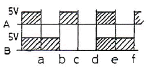
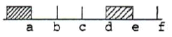
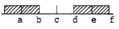
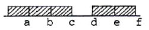
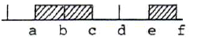
(정답률: 83%)
54. 다음 ( ) 안에 가장 알맞은 내용은?
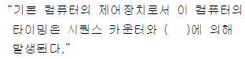
- 레지스터
- 누산기
- 플립플롭
- 디코더
(정답률: 56%)
55. C언어의 스트링(string)에 대한 설명으로 옳지 않은 것은?
- 스트링은 메모리의 연속적인 영역에 존재하는 문자열로써 그 길이는 얼마라도 관계없다.
- 널(null) 스트링은 공백을 의미한다.
- 서브 스트링의 구분은 특수문자를 구분자로 사용할 수 있다.
- 널(null) 스트링은 길이를 갖고 있는 스트링이다.
(정답률: 55%)
56. C언어에서 RECORD의 구성과 가장 밀접한 관계가 있는 것은?
- struct
- main
- procedure
- define
(정답률: 72%)
57. 컴퓨터의 클록 펄스가 5[MHz]이고 20비트 레지스터를 가지고 데이터를 전송할 때, 비트시간과 워드시간은 각각 얼마인가?
- 0.2[μs], 4[μ]
- 0.4[μs], 8[μ]
- 0.6[μs], 12[μ]
- 0.28[μs], 16[μ]
(정답률: 71%)
58. C언어에서 대한 특징과 거리가 가장 먼 것은?
- 간략한 표현
- 높은 이식성
- 범용 프로그래밍 언어
- 프로그램의 유연성으로 인한 프로그래머의 작업 증가
(정답률: 79%)
59. 어셈블리어에 대한 설명으로 옳지 않은 것은?
- 기계어에 비해 프로그램 작성이나 수정이 어렵다.
- 호환성이 없으므로 전문가 외에는 사용하기 어렵다.
- 컴퓨터 동작 원리에 대한 전문 지식이 필요하다.
- 기계어보다 사용하기 편리하다.
(정답률: 74%)
60. 프로그램에서 2회 이상 중복 사용되는 부분이 있을 때, 그 부분을 별도로 필요할 때마다 호출하여 사용함으로써 프로그램의 스텝수를 절약하는 처리를 무엇이라 하는가?
- 인터럽트 루틴
- 서브 루틴
- 액세스 루틴
- 레지스터 루틴
(정답률: 70%)
4과목: 전자계측
61. 주어진 전기적 신호의 주파수 스펙트럼에 걸친 에너지 분포를 CRT에 나타내는 기기는?
- Oscilloscope
- Spectrum Analyzer
- Frequency counter
- Samplingscope
(정답률: 70%)
62. 다음 기록계 중 영위법(zero method)에 해당되는 것은?
- 직동식 기록계
- 타점식 기록계
- 자동 평형식 기록계
- X-Y 기록계
(정답률: 76%)
63. 미소한 미지의 저항을 측정할 때 오차의 원인이 되는 접촉 및 리드선 저항을 최소화한 브리지는?
- 셰링 브리지
- 윈 브리지
- 휘트스톤 브리지
- 캘빈 더블 브리지
(정답률: 70%)
64. 수부하 전력계(Calorimeter)에 의해서 전력을 측정시 냉각수 입구의 온도가 4[℃], 출구의 온도가 6.5[℃], 냉각수 유량이 4[cc/sec]라면 고조파 전력은 약 얼마인가?
- 41.84[W]
- 43.84[W]
- 4.18[W]
- 4.3[W]
(정답률: 53%)
65. RLC로 구성된 회로의 공진주파수를 개략적으로 측정할 수 있는 간단한 계기는?
- 흡수형 주파수계
- 계수형 주파수계
- 헤테로다인 주파수계
- 더블 비트 주파수 측정기
(정답률: 44%)
66. 피측정 주파수를 계수형 주파수계로 측정한 결과 1초에 반복한 횟수가 60번이었다. 피측정 주파수는?
- 1[Hz]
- 60[Hz]
- 1/60[Hz]
- 360[Hz]
(정답률: 83%)
67. 디지털 전압계의 원리는?
- D-A 변환기
- A-D 변환기
- 비교기
- 단안정 멀티바이브레이터
(정답률: 81%)
68. 전자 시간간격 계수기로 선형경사전압이 입력전압 기준에서 0[V]까지 하강하는데 걸리는 시간을 측정하여 그 시간에 비례하는 펄스 개수를 전자지시기 상에서 숫자로 나타내는 디지털 전압계(DVM)는?
- 램프형(ramp-type)
- 적분형(integrating-type)
- 연속 평형형(continuous balance-type)
- 계속 추정형(successinve approximation-type)
(정답률: 69%)
69. 직류 전류 측정에 가장 적합하며 균등 눈금인 계기는?
- 가동코일형
- 가동철편형
- 전류력계형
- 열선형
(정답률: 57%)
70. 10[GHz]의 주파수를 측정하려면 어떤 주파수계를 사용해야 하는가?
- 그리드 딥 미터
- 진동편형 주파수계
- 공동 파장계
- 수정공진자형 주파수계
(정답률: 42%)
71. 다음 중 저주파 측정에 가장 많이 사용되는 측정법은?
- 공진 브리지법
- 레헤르선 주파수계
- 흡수형 주파수계
- 헤테로다인 주파수계
(정답률: 46%)
72. 어떤 값을 측정하였더니 측정값 M=10.24일 때 참값 T=10이라 하면 보정율은 약 얼마인가?
- -0.24
- -20.24
- -0.024
- +0.23
(정답률: 71%)
73. 계수형 주파수계의 구성도에서 계수부의 회로는?
- 프리세트(preset) 회로
- OR gate 회로
- 플립플롭(flip flop) 회로
- 제어 회로
(정답률: 80%)
74. A-D 변환기의 분류 방식 중 계수 방식에 해당되는 것은?
- 전압-시간 변환형
- 추종 비교형
- 수차 비교형
- 주기-시간 변환형
(정답률: 62%)
75. 다음과 같은 블록도를 갖는 측정은 무슨 특성을 측정하고자 하는 것인가?
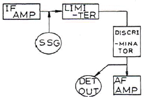
- 진폭 제한기의 특성 측정
- 주파수 변별기의 특성 측정
- 저주파 증폭기의 특성 측정
- 중간주파 증폭기의 특성 측정
(정답률: 65%)
76. 오실로스코프(oscilloscope)는 높은 주파수 또는 펄스(pulse)와 같은 충격성 전압이나 전류를 관측할 수 있는 계기로서 사용상 주의점에 해당하지 않는 것은?
- 접지 단자는 반드시 접지한다.
- 관측 파형은 항상 중앙에 오게 한다.
- 사용하지 않을 때는 휘도를 낮추던가 전원을 끈다.
- 관측하려는 신호의 주파수가 낮거나 직류의 경우는 직접 단자를 사용한다.
(정답률: 79%)
77. 최대 눈금 50[mV], 내부 저항 10[Ω]의 직류 전압계에 배율기를 사용하여 3[V]의 전압을 측정하려면 배율기의 저항은 몇 [Ω]으로 하여야 하는가?
- 500[Ω]
- 590[Ω]
- 600[Ω]
- 690[Ω]
(정답률: 81%)
78. 200[V]용 직류 전압계가 있다. 내부저항은 18[kΩ]이다. 이 전압계를 직류 600[V]용으로 사용하려면 몇 [kΩ]의 직렬저항이 필요한가?
- 72[kΩ]
- 36[kΩ]
- 12[kΩ]
- 2[kΩ]
(정답률: 73%)
79. 디지털 전압계의 주요 구성에 속하지 않는 것은?
- 제동 회로
- 계수기 회로
- 게이트 회로
- A-D 변환 회로
(정답률: 45%)
80. 오실로스코프를 사용하여 측정이 불가능한 것은?
- 전압
- coil의 Q
- 주파수
- 변조도
(정답률: 85%)